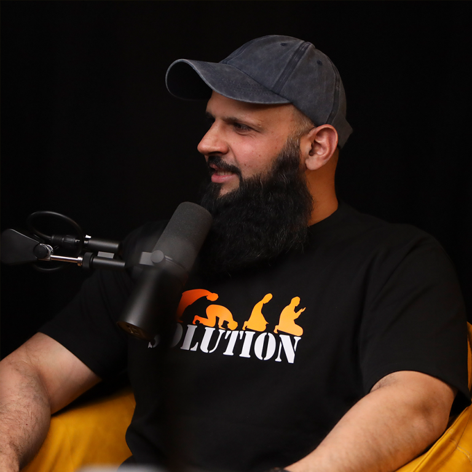
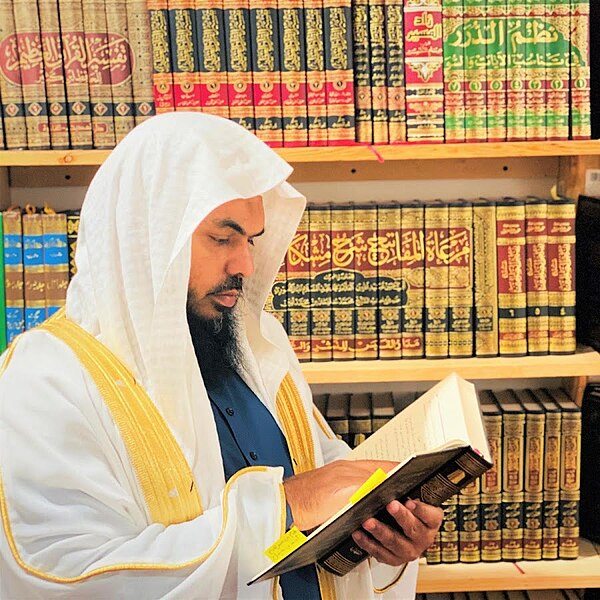
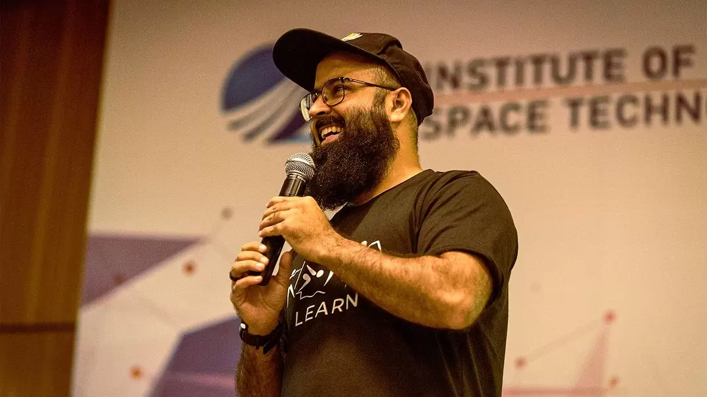
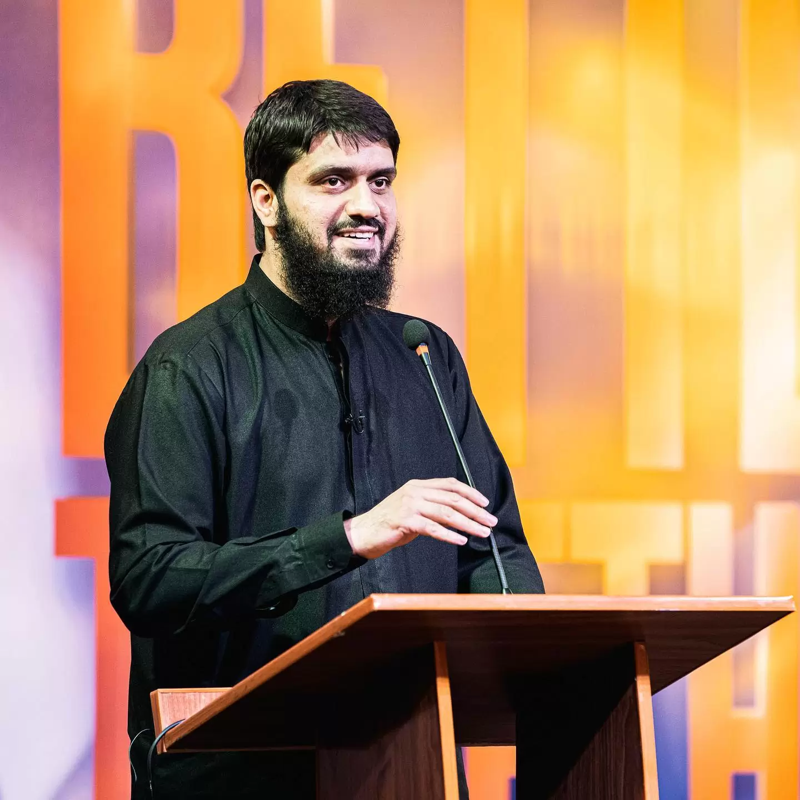
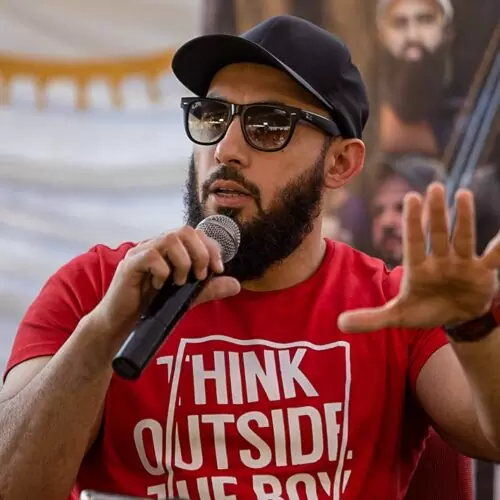

Anas ibn Malik reported: The Messenger of Allah, peace and blessings be upon him, said:
be upon him, said:
Seeking knowledge is an obligation upon every Muslim.
Source: Sunan Ibn Mājah 224, Grade: Sahih
Uthman bin Affan reported: The Prophet, peace and blessings be
upon him, said:
The best of you are those who learn the Quran and teach it.
Source: Ṣaḥīḥ al-Bukhārī 4739, Grade: Sahih
Abu Musa reported: The Prophet, peace and blessings be upon him,
said:
Verily, the parable of the guidance and knowledge that Allah
Almighty sent with me is the likeness of rain falling upon the earth.
Among them is a good group which receives the water and thus there
is abundant growth of herbage and grass. Among them is a barren
land which retains the water and thus Allah benefits people from it;
they drink from it and graze their animals. And it falls upon another
group which is only abysmal; it does not retain water, nor does
herbage grow. Such is the parable of one who understands the
religion of Allah and benefits from what Allah sent with me; he learns
and he teaches. Such is the parable of one who does not raise his
head and does not accept the guidance Allah sent with me.
Source: Ṣaḥīḥ al-Bukhārī 79, Grade: Muttafaqun Alayhi
Mu’awiyah reported: The Messenger of Allah, peace and blessings be
upon him, said:
If Allah intends goodness for someone, he gives him understanding of
the religion
Source: Ṣaḥīḥ al-Bukhārī 71, Grade: Muttafaqun Alayhi
In another narration, the Prophet said:
O people, knowledge only comes by learning and understanding only
comes by seeking understanding. For whomever Allah intends good,
he gives him understanding of the religion. Verily, only those with
knowledge fear Allah among his servants. (35:28)
Source: al-Mu’jam al-Kabīr 929, Grade: Hasan
Israr Ahmad[a] (26 April 1932 – 14 April 2010) was a Pakistani Islamic scholar, orator and theologian. He developed a following in Pakistan and the rest of
South Asia but also among some South Asian Muslims in the Middle East, Western Europe, and North America.
He has written around 60 books on Islam and Pakistan, of which twenty nine have been translated into several other languages, including in English, as of 2017.
In 1956 he left the Jamaat-e-Islami, which had become involved in electoral politics, to found Tanzeem-e-Islami. Like many other Sunni Islamic
activists/revivalists he preached that the teachings of the Qur'an and the Sunnah and divine law of Sharia must be implemented in all spheres of life,
that the Caliphate must be restored as a true Islamic state, and that Western values and influences were a threat to Islam and Pakistan. He was also
known for his belief that Pakistan, not Arab lands, should be the foundation for a new caliphate, that democratic governance was un-islamic.
He was awarded the Sitara-i-Imtiaz, the third-highest civilian award of Pakistan, in 1981.
Mufti Sahab pursued an intensive, full-time study of the classical, Islamic
academic disciplines hitherto known as the Mufti Sahab pursued an intensive,
full-time study of the classical, Islamic academic disciplines hitherto known
as the 'Dars-e-Nizami', and further completed his specialisation in Islamic
jurisprudence (Takhassus fil Fiqh)
Mufti Sahab pursued an intensive, full-time study of the classical, Islamic academi
c disciplines hitherto known as the 'Dars-e-Nizami', and further completed his speci
alisation in Islamic jurisprudence (Takhassus fil Fiqh)
Zakir Abdul Karim Naik (born 18 October 1965) is an Indian Islamic public orator who focuses on comparative religion.
Naik is currently a wanted fugitive in India, where, in 2016, the authorities charged Naik for money laundering while
he was abroad in Malaysia; Naik did not return to India and became a permanent resident of Malaysia. Naik denies all
charges. The National Investigation Agency attempted to issue an Interpol red notice for his arrest, which was refused
due to insufficient evidence.
He is the founder and president of the Islamic Research Foundation (IRF) and Peace TV. He is a well-known figure in the
Islamic world, and while he does not claim to be a follower of any one school of thought in Islam, he is most closely
associated with the Salafi school of thought.[15] Naik's Peace TV is banned in India, Bangladesh, Canada, Sri Lanka,
and the United Kingdom under hate speech laws.
Tariq Jamil (Punjabi, Urdu: طارق جمیل, romanized: Ṭāriq Jamīl; Punjabi pronunciation: [t̪aːɾɪk d͡ʒəmil]; born 1 October 1953) is a Pakistani Islamic cleric, preacher and member of the Tablighi Jama'at. The recipient of the Pride of Performance award, Tariq Jamil has been named in The 500 Most Influential Muslims year since 2012. In the 2024 edition of the publication, he was ranked 34th most influential Muslim alive and topped YouGov polls in 2018 and 2020 for Pakistan’s most admired man.
Raja Zia ul Haq is a Famous Pakistani Motivational speaker, trainer, who was born on Jun 05, 1985 in Karachi, Pakistan. Raja Zia ul Haq, the CEO of Youth Club has a Master’s degree in Information Technology from the University of Canberra, Australia. He holds over a decade of professional experience in the Media and Telecom industry. Over the years, he has conducted numerous lectures, workshops and podcasts including Maulvi With An Attitude.

Adnan Rashid, a distinguished historian with a specialization in the history of Islamic civilization,
comparative religion, and Hadith literature, continues to captivate audiences worldwide with his deep-seated
passion for history, poetry, travel, antiquities, books, and numismatics.
Having earned an honors degree in history from the University of London, Adnan Rashid is currently pursuing further
studies to enhance his already impressive academic background. His commitment to scholarship is further underscored
by the Ijazahs in Hadith that he has received from several eminent scholars.
Uthman Ibn Farooq Yusufzai, commonly known as Sheikh Uthman, is an American da'eeh. He is best known for his work with the One Message Foundation (OMF), a platform aimed at inviting people to Islam through interfaith dialogue and public outreach.
Hashim is a key figure at Speakers Corner, known for his articulate and thoughtful approach to Dawah. With a strong foundation in Islamic teachings and a keen interest in contemporary issues, Hashim addresses challenging questions with clarity and compassion. His ability to engage with people from all walks of life has earned him a loyal following
Mansur is a renowned speaker and debater at Speakers Corner with a deep passion for Dawah and Apologetics. With a background in Islamic studies and years of experience, Mansur is dedicated to educating people about Islam and addressing misconceptions. His engaging speaking style and ability to connect with diverse audiences have made him a respected figure in the Muslim community.
He is Country Manager (Males) of Youth Club Tuaha ibn Jalil is a famous Public speaker, Trainer, Life Coach, Motivational speaker & Head of the Youth Club. He belongs to a Punjabi family. In the beginning, he was a liberal person who just wants to live his own life he bel ieved in the existence of Allah but he never tried to become a practicing Muslim later on, Gradually, he started believ ing in Allah and then became a practicing Muslim now he cha nged him as a real hero for every young man.
Mugheerah Luqman serves as the Regional Director at Youth Club, Punjab. With qualifications in ACCA and Applied Accounting, he is currently pursuing a PhD in Islamic Studies and holds published research, ‘Foundations of Islamic Psychology.’ Mugheerah has addressed national and international audiences and conducted workshops at renowned universities in Pakistan and abroad.
Abu Saad holds a Bachelor’s in Business and IT, as well as a Master’s in Finance and Accounts from the National American University, Sharjah. He has a deep understanding of Arabic language combined with his passion for the Quran. Being a physical fitness trainer, he promotes a balanced lifestyle, emphasising the significance of dedication, discipline, and mental well-being.
